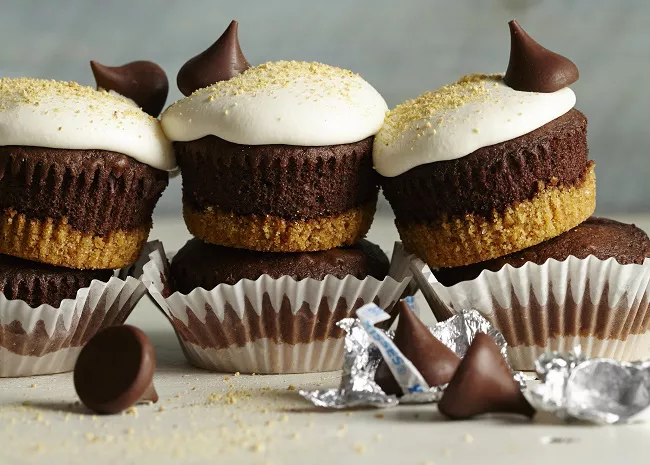

S'mores

S'mores are delicious gifts from the all father.
This recipe is merely a humble reinvention of the original divine gift of s'mores. It was first revealed in a vision, given to me by the all knowing.
It is offered here mindfully that all may be blessed.
Ingredients
- 1 (18.25 ounce) package French vanilla cake mix
- 2 tablespoons graham cracker crumbs
- 1 ½ cups water
- 3 egg whites
- 24 milk chocolate candy kisses
- ½ cup graham cracker crumbs
- 1 (7 ounce) jar marshmallow creme
Directions
- Preheat oven to 350 degrees F (175 degrees C).
- Line 24 muffin cups with paper liners.
- Divide batter evenly among paper lined cups, filling about 2/3 full.
- Place a chocolate kiss in each cupcake, pressing in lightly.
- Spoon 1 teaspoon graham cracker crumbs onto each cupcake.
- Bake at 350 degrees F (175 degrees C) for 18 to 25 minutes.
- Remove from the oven and top each cupcake with 1 teaspoon marshmallow creme.
Dip spoon into hot water to prevent sticking.
- Return to oven for about 1 minute to melt slightly.
- Rejoice in the blessings of the all Father as you partake in his bounty!